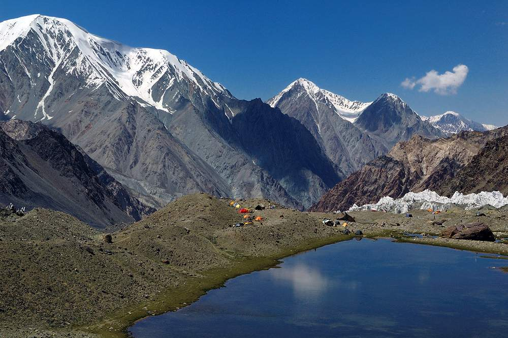
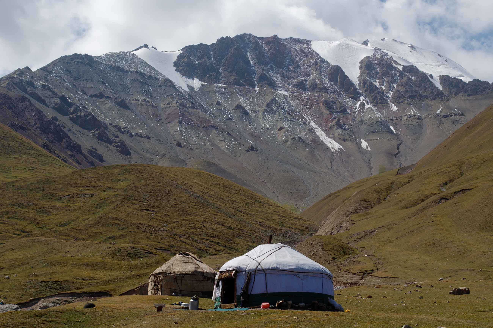

The climate in Kyrgyzstan is generally sunny, averaging only about 70 days of rain a year. The climate is continental, because Kyrgyzstan is located so far from any ocean. Though the summers in the cities can get quite hot, the mountains remain colder even in the hottest months. Winters are cold and snowy everywhere, especially at higher elevations. Days tend to be significantly warmer than nights, but the general climate of Kyrgyzstan is quite pleasant, with four defined seasons.
 